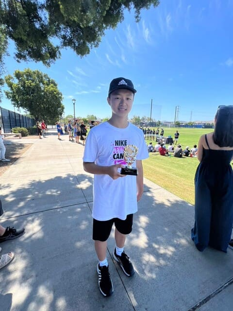

上午00:00:00
1900/01/01
1900/01/01
黃韻德
工作內容:
領導統籌、分配工作、拍攝錄影、影片製作
領導統籌、分配工作、拍攝錄影、影片製作
在這一次的網博競賽中，是我有史以來領導過資料量最大的案子，身為領導者既要站得高，看見別人看不到的，更要蹲的低盡量顧到每個環節，在這兩種不同屬性的角色中的敏捷的切換與不放棄的溝通是我最大的學習。另外，這是我第一次製作採訪類型的影片，與以往製作微電影不同，需要花更多時間去思考受訪者正在表達的，透過剪輯去彙整成最後要呈現給閱聽人的。在製作的過程中有許多點點滴滴，很開心有組員的陪伴，指導老師的細心教導，好讓這次的專案可以順利完成！

陳信杰
工作內容:
資料整理、文字編輯
資料整理、文字編輯
這次參與製作的國際網博，對我來說是一個大型的競賽，非常考驗分工合作的能力，在當上文字組的組長後，我學習到如何精進寫文字稿的能力與分配組員的工作，也了解如何寫採訪前的訪綱以及採訪後的訪稿，對我受益無窮。最後也謝謝主任、老師和我們這次網博的成員共同合作完成這次的作品。

李承孺
工作內容:
網頁設計、網頁製作、管理網頁主機
網頁設計、網頁製作、管理網頁主機
在瀏覽各式網頁時，發現有一些特殊造型的設計的網頁元素或好看的配色板面設計，會使用開發人員工具，仔細觀察它的各種巧思與奧妙，因此我也累積了能力，並與這次主要的圖形設計者配合的很好。雖然寫出來的結果偶爾會發生與我預期不同的排版呈現，但是我認為這也是我學習網頁製作的墊腳石。
對於這次網頁設計，是一個蠻大的挑戰，去年做的網博是直接用模板來改，而這次我是從零開始將一整個網頁的功能、排版等建立起來。而我也有透過這次網博比賽，將我網頁中的部分JavaScript功能做成模組，以利用於未來專案上！
對於這次網頁設計，是一個蠻大的挑戰，去年做的網博是直接用模板來改，而這次我是從零開始將一整個網頁的功能、排版等建立起來。而我也有透過這次網博比賽，將我網頁中的部分JavaScript功能做成模組，以利用於未來專案上！

林智芸
工作內容:
網頁設計、文字編排
網頁設計、文字編排
在參加網博比賽之前我就常常嚮往網頁編排及繪製，對於充滿設計感的各式網頁都會仔細觀察它的各種巧思與奧妙。
對於這次美編繪製，跟平常在課堂當中學的不一樣，而是多偏向於實用類，怎麼把圖案分成不同部分給寫程式的人員使用，還有如何讓畫面清楚呈現此主題要凸顯的重點，這些都是要換位思考，站在觀看者的角度來去判斷設計風格步驟。透過參與網博比賽讓我體會和他人或和未來客戶溝通協調的明確內容，以上學習到的經驗會利用於未來工作上！
對於這次美編繪製，跟平常在課堂當中學的不一樣，而是多偏向於實用類，怎麼把圖案分成不同部分給寫程式的人員使用，還有如何讓畫面清楚呈現此主題要凸顯的重點，這些都是要換位思考，站在觀看者的角度來去判斷設計風格步驟。透過參與網博比賽讓我體會和他人或和未來客戶溝通協調的明確內容，以上學習到的經驗會利用於未來工作上！

李承憲
工作內容:
資料整理、數據分析
資料整理、數據分析
這次的網博競賽，是參加過最大規模的比賽了吧！分工合作的重要性也更能夠體會到，資料分析這一部分和文字組比起來簡直微不足道。在分析的過程之中，沒有excel以及Ai的幫助可是會把我們搞的一個頭兩個大，善用工具的資訊能力或許是生活在這世紀的我們所必須富有的生存法則吧！也謝謝組長及隊員的合作，適時地提出自己的看法才能夠讓這項工作如期完成，每個人在這段期間都是不可或缺的螺絲釘，少了任何一部分都不可能有今天的成果！

蔡一睿
工作內容:
資料整理、數據分析
資料整理、數據分析
這次的網博競賽，是我在人生中體驗到最深刻的一次分工合作。以往在學校中遇到的都可以單人或幾個人就完成的事，但這次的真的太大型了，我們分工也因此分的很細。
在數據分析的過程中，我學到了chatgpt真的不是萬能的，我給他了同份資料，他卻能給我一堆千奇百怪的數據。導致幾乎每份數據還要額外花心力去用。
這次競賽也讓我學到了有機會就趕快解決事情，往後拖搞不好更沒有時間處理。
謝謝同伴以及指導老師們協助，有了你們才能讓這次的競賽成功完成。
在數據分析的過程中，我學到了chatgpt真的不是萬能的，我給他了同份資料，他卻能給我一堆千奇百怪的數據。導致幾乎每份數據還要額外花心力去用。
這次競賽也讓我學到了有機會就趕快解決事情，往後拖搞不好更沒有時間處理。
謝謝同伴以及指導老師們協助，有了你們才能讓這次的競賽成功完成。

邱語喬
工作內容:
文字編輯
文字編輯
這次參與的國際網博競賽，應該是我參與過最大型的比賽吧！此次專題中，我負責的是文字編輯。尋找相關資料，將多筆資料整理成淺顯易懂的文字，讓他人更了解我們的專題。撰寫採訪的文字稿，讓採訪時能更清楚抓到我們想訪問的重點。從中我學習到了如何更好的表達自己的想法，採訪稿應如何撰寫讓受訪者更清楚理解我們的意思。也非常感謝其他組員們的幫助與指導，讓這次的專題順利進行，也讓我在這次的專題中受益良多。

陳佳君
工作內容:
文字編輯
文字編輯
在這次的專題製作中，我負責的部分是文字編輯，我在參與的過程中需要找相關資料並把它轉化成文字，讓讀者能更了解相關專題，這個過程不僅提升了我的研究和寫作能力，也培養了我轉化專業知識成易懂文字的技能。訪問過程中的聆聽技巧讓我更好地理解對方的觀點和經歷。感謝所有一起合作的同學和老師，因為有大家的分工合作才能完成這次的專題。